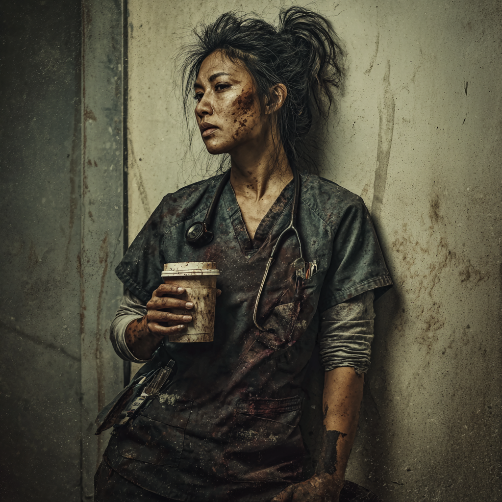
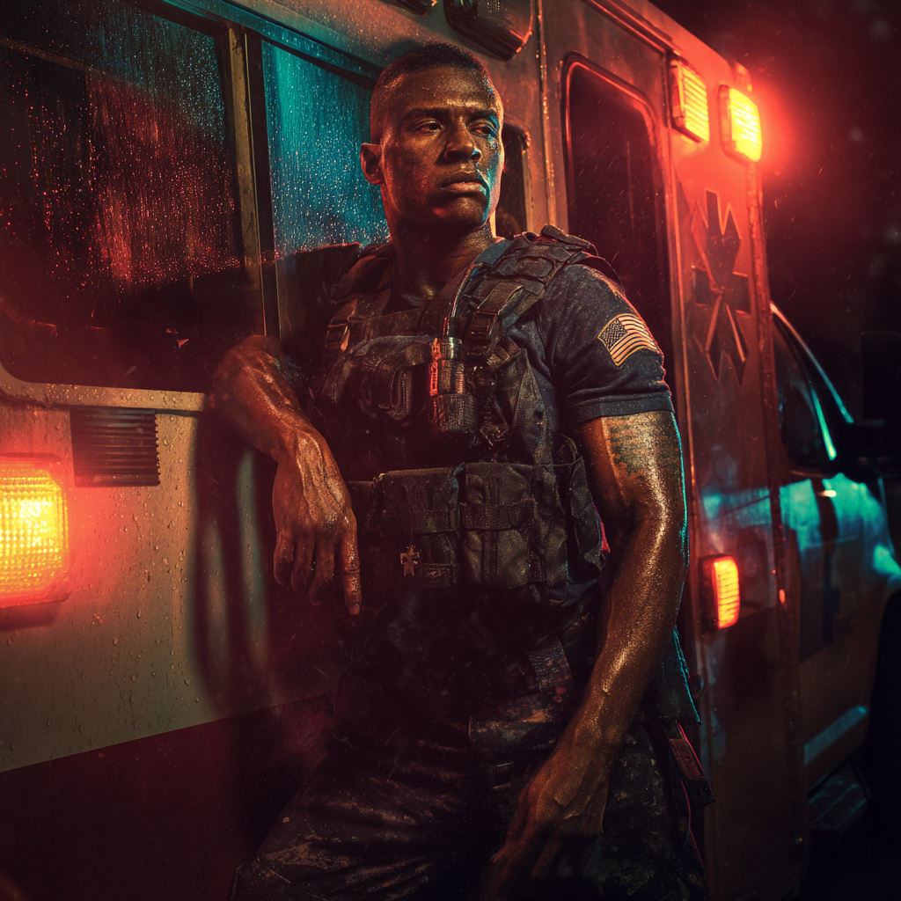
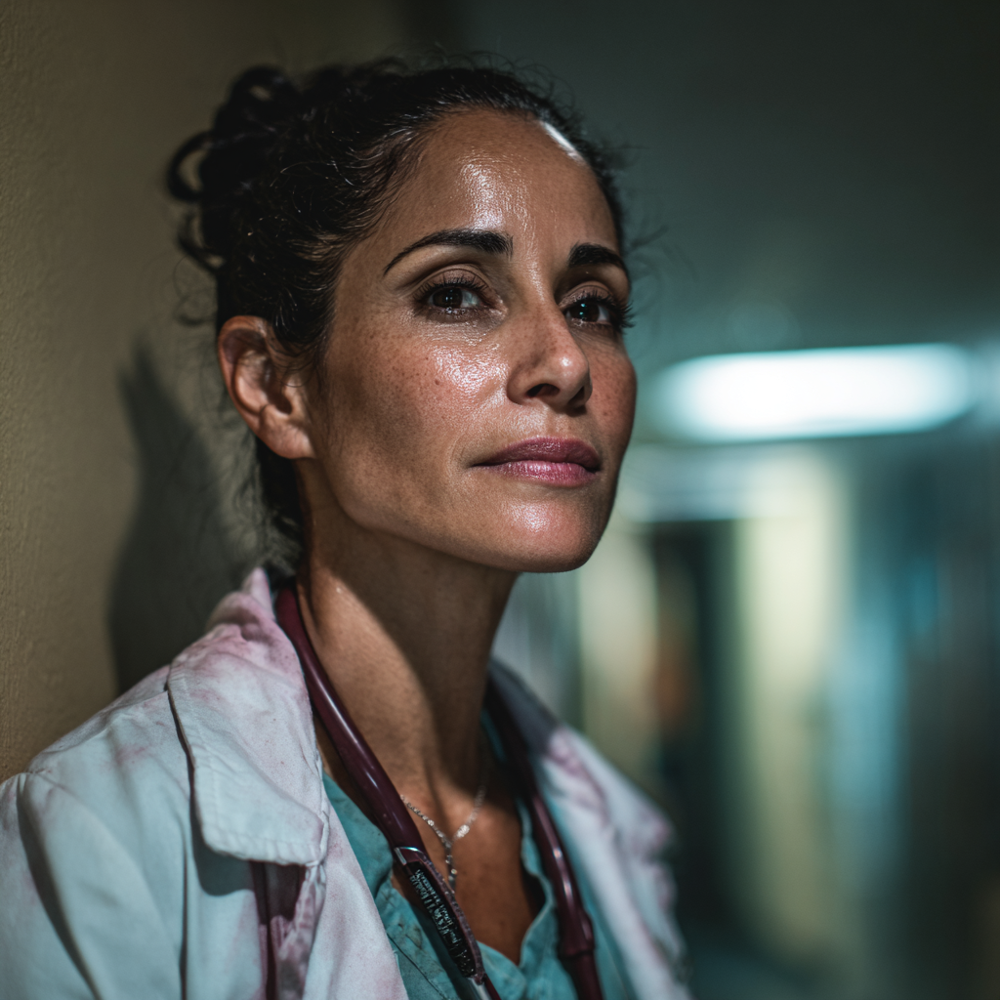
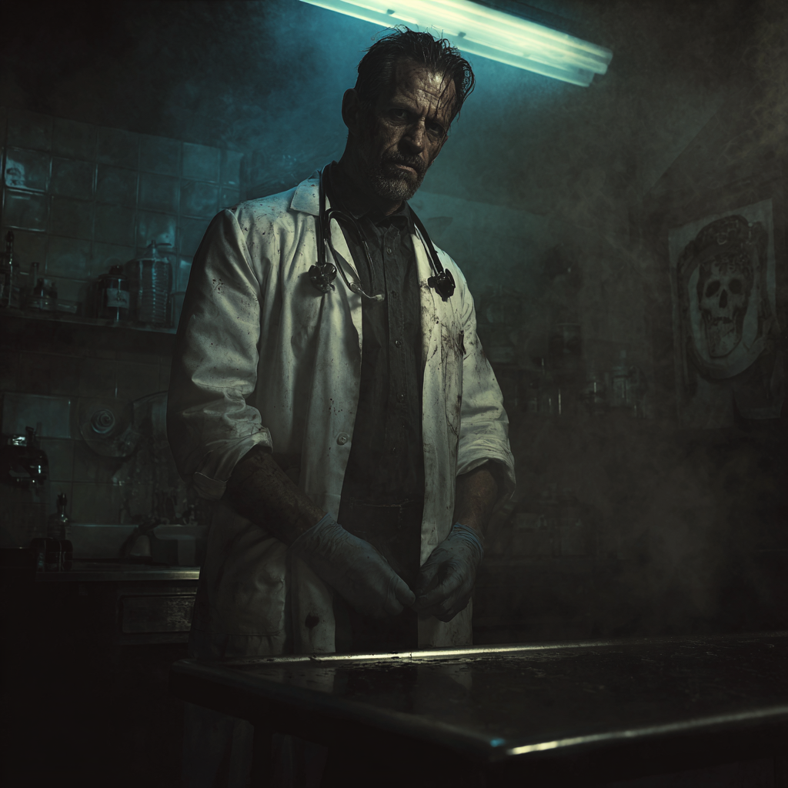
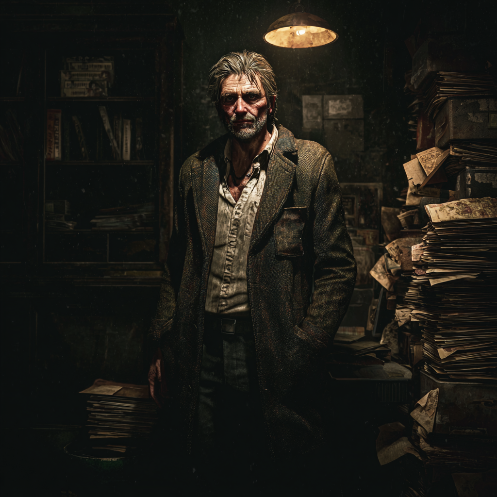
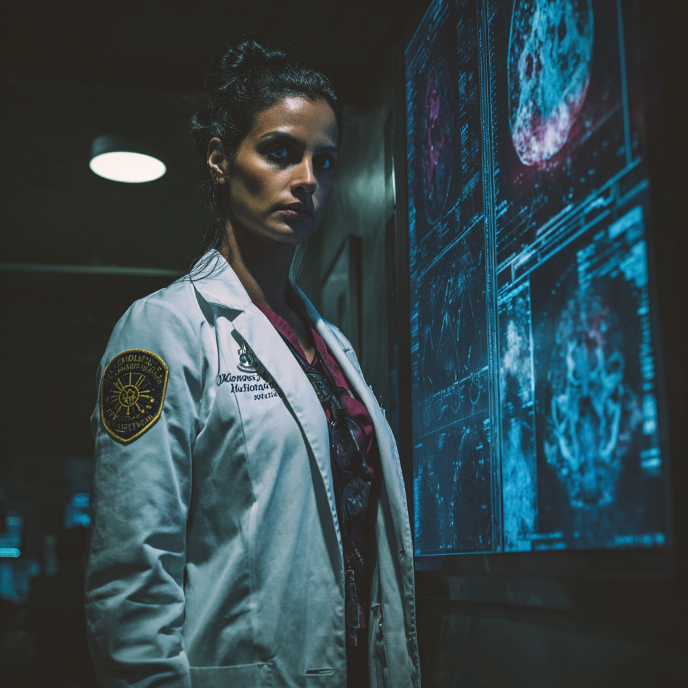
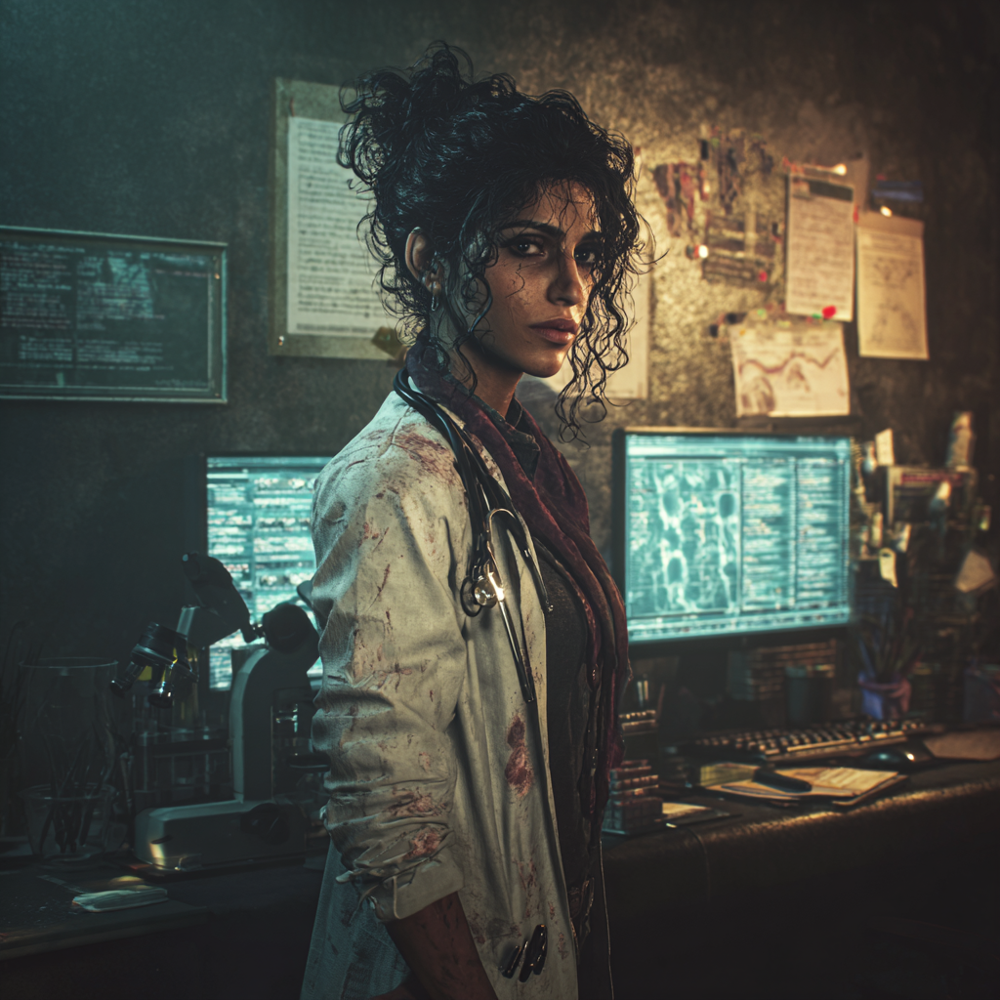
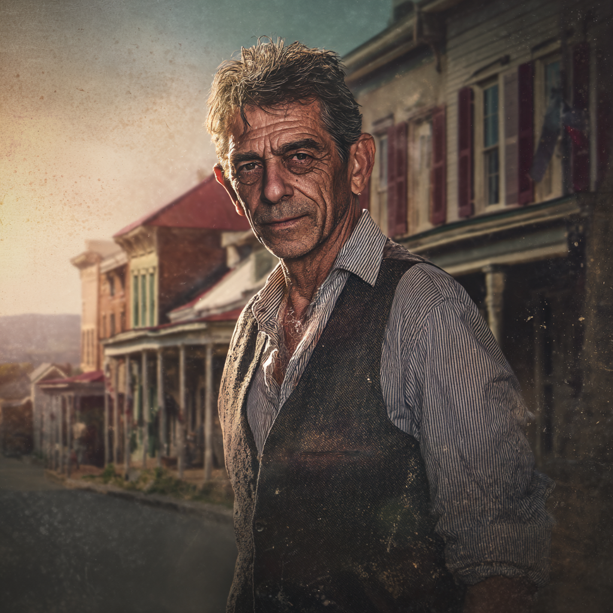

"TRIAGE"
Dr. James Park
Traumakirurg, Johns Hopkins

"NIGHT SHIFT"
Dr. Sarah Chen
Akutläkare, DC General ER

"FLIGHT DOC"
Dr. Marcus Webb
HEMS Flygambulansläkare

"COMBAT MEDIC"
Andre Johnson
Paramedic, DC Fire and EMS

"BURN UNIT"
Dr. Elizabeth Torres
Plastikkirurg, Walter Reed

"AUTOPSY"
Dr. Raymond Clarke
Chief Medical Examiner, DC

"BONES"
Dr. Michael Chen
Forensisk Antropolog, FBI
"LAB RAT"
Dr. Keisha Washington
Forensisk Patolog, Maryland

"COLD CASE"
Dr. Frank Morrison
ME Consultant, FBI Cold Case
"TRACE EVIDENCE"
Dr. Lisa Tran
Forensisk Toxikolog, FBI Lab
"PSYCH WARD"
Dr. Robert Ashford
Psykiater, St. Elizabeths

"BRAINSTORM"
Dr. Nina Patel
Neurolog, Johns Hopkins

"SLEEP DOC"
Dr. James Moreau
Sömnmedicinläkare, Privat

"PTSD SPECIALIST"
Dr. Maria Santos
Psykiater, Walter Reed PTSD

"GERO-PSYCH"
Dr. Harold Winters
Geriatrisk Psykiater, VA

"RAD"
Dr. Jennifer Kim
Radiolog, Georgetown Hospital

"INFECTIOUS"
Dr. David Okonkwo
Infektionsläkare, NIH

"GENE"
Dr. Rebecca Stein
Genetiker, NIH/CDC

"WILDERNESS"
Dr. Thomas Reeves
Expeditionsmedicinare

"CORONER"
Dr. William Patterson
Landsbygdsläkare & ME